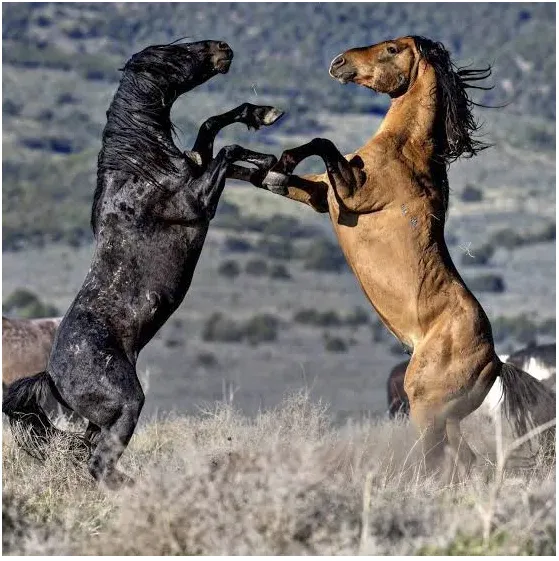
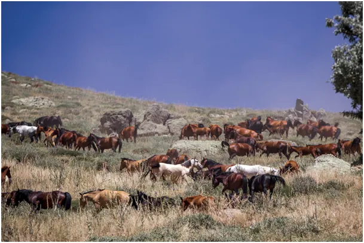
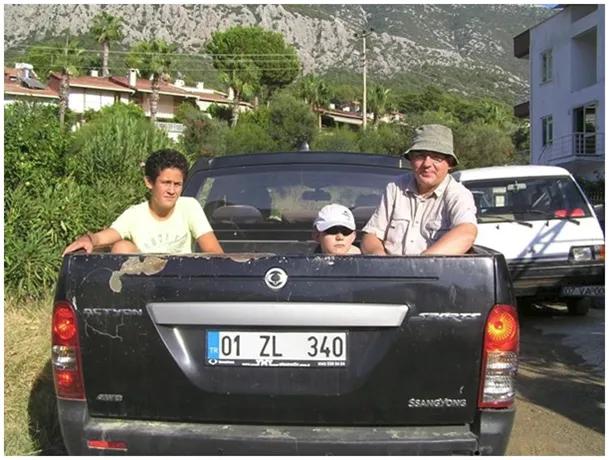
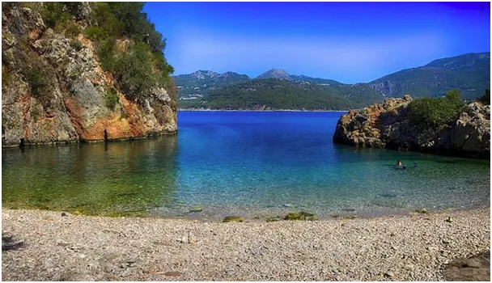

Z lotniska jedź tam, gdzie nikt nie jedzie!
Wakacje się kończą ? A może zaczynają!
Gdy zaczyna się rok szkolny polska turystyka zamyka się na 10 miesięcy, ten schemat obowiązuje coraz mniej, bo nasze dzieci są coraz starsze i mamy dla siebie coraz więcej czasu, też po wakacjach. Ciepłe plaże nad morzami południa też cichną z dnia na dzień, bo w sezonie zalewają je rodziny z dziećmi z Europy północnej. W hotelach pojawiają się wtedy "emeryci", biznes się kręci.

Kilka razy pisałem negatywnie o turystyce, bo ona psuje ludność lokalną, zamienia relacje z przybyszami na szybką wymianę: napiwek za uśmiech. Udało mi się poznać tysiące ludzi poza szlakami turystycznymi dzięki prostej zasadzie: Z lotniska jedź tam, gdzie nikt nie jedzie! Im dalej jestem od centrów turystycznych, tym ludzie pokazują mi piękniejsze dzikie plaże, zapraszają do stołu i chętnie próbują naszych pierników.

Koszty takich wyjazdów są znacznie niższe niż hotelowy pakiet, a kupowanie owoców prosto w sadzie pozwala poznać ich prawdziwy smak i zapach tamtejszej ziemi.
Niżej, pod linkiem, tekst o tym. Czytam go z nadzieją, że w końcu uda mi się wytropić te dzikie konie, które w górach Turcji żyją od tysięcy lat.

Na stepach Kazachstanu udomowiono Konia Przewalskiego ok. 5000 lat temu, duże populacje dziko żyją tam do dziś. Inny, większy gatunek został udomowiony w tym czasie na Bliskim Wschodzie, od nich pochodzą Konie Arabskie. W Anatolii ludzie na zimę puszczali konie na swobodę, by same sobie szukały pożywienia. Z czasem duże populacje zostały w górach i zdziczały, wróciły do swego pierwotnego życia.
Mieszkają obecnie w górzystej Turcji bardzo licznie, odpierają ataki wilków. Kto jedzie je tropić?